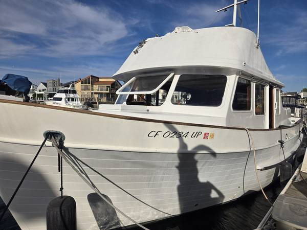

B-Scout Boat Guide · UNIV-40-TR
Universal 40 Europa Europa Trawler
1977–1995
The Universal 40 Trawler is a Taiwan-built traditional trawler associated with Universal Marine. Surviving examples emphasize teak interiors, displacement-speed diesel operation and conventional cruising layouts, but model naming and standard specifications are not consistently documented.

- Length
- 40 ft
- Beam
- 13.67 ft
- Draft
- 4.67 ft
- Hull behaviour
- Semi-Displacement
- Fuel
- Diesel
- Propulsion
- Shaft
- Engine configuration
- Twin Inboard
- Boat family
- Trawler
- Construction
- Fiberglass
Best for
- Buyers comfortable researching a low-volume Taiwan trawler
- Couples seeking classic wood-rich cruising accommodations
- Slow inland and coastal cruising
Trade-offs
- Low-volume documentation makes model verification important
- Exterior wood, tanks and systems may require substantial restoration
- Performance is displacement-speed and individual machinery varies
Known concerns
- No model-specific concern has been promoted to B-Scout’s evidence threshold. This does not mean the model has no age-, condition- or hull-specific risks.
Inspection focus
- Confirm builder plate, HIN, exact model and year
- Inspect decks, windows and exterior teak for moisture and prior repairs
- Inspect tanks, wiring, plumbing and sanitation systems
- Inspect engine, cooling, exhaust, shaft, rudder and keel
- Verify actual tankage, displacement and air draft
Continue researching
Related boat models
Universal 36 Tri-Cabin Trawler Tri-Cabin
36 ft · Semi-Displacement
CHB 40 Double Cabin Double Cabin
40 ft · Semi-Displacement
Cape Dory 40 Explorer Explorer
40 ft · Planing / Modified-V
DeFever 40 Offshore Cruiser Offshore Cruiser
40 ft · Semi-Displacement
Island Gypsy 40 Classic Classic
40 ft · Semi-Displacement
Marine Trader 40 Double Cabin Double Cabin
40 ft · Semi-Displacement
About this record
B-Scout preserves uncertainty: missing information remains unknown rather than being treated as a negative. Specifications and guidance describe the model record; individual boats can differ by year, equipment, refit and condition.